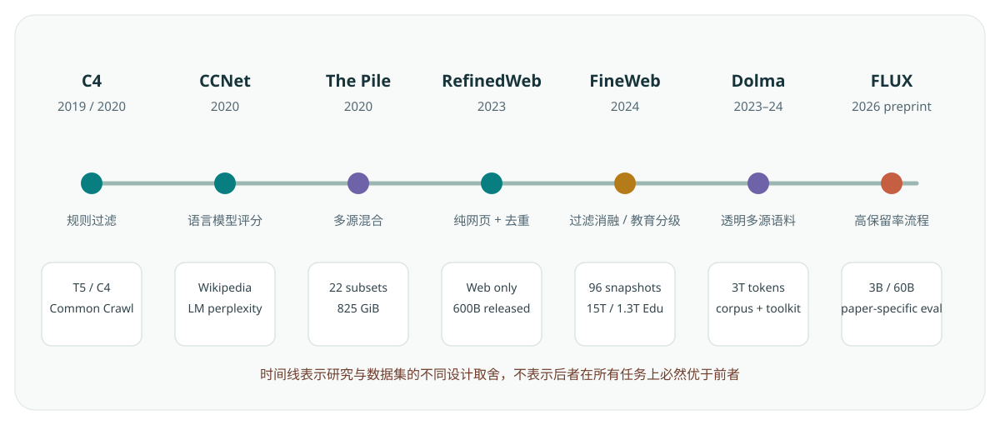

MODULE 25 / LLM DATA ENGINEERING
七类预训练数据构建范式对比
把 C4、CCNet、The Pile、RefinedWeb、FineWeb、Dolma 与 FLUX 放在同一张方法地图上，比较它们解决的问题，而不是把跨论文分数拼成排行榜。
预训练语料构建没有一条单调升级的路线。规则过滤、语言模型评分、多源混合、纯网页精细清洗、教育质量分类、透明数据工具链和高保留率过滤，各自优化不同目标。选择方法时必须同时看来源、任务、数据预算、计算资源、许可和评测协议。
七类代表性设计，不是七个可直接排名的数据集

| 代表工作 | 核心策略 | 论文 / 数据事实 | 适合学习的设计点 |
|---|---|---|---|
| C4 2019/2020 | 规则与启发式过滤 | T5 工作介绍从 Common Crawl 清洗得到 C4，并讨论去重、移除不完整句子和噪声内容。 | 规则可解释、容易审计，但语言和领域迁移时需要重新验证。 |
| CCNet 2020 | 语言识别、去重与语言模型评分 | 用接近 Wikipedia 等高质量来源的语言模型困惑度筛选 Common Crawl 文档。 | 评分器依赖参考语料；低困惑度不是所有任务下的“高质量”定义。 |
| The Pile 2020 | 多来源语料混合 | 论文描述 825 GiB 英文语料，由 22 个子数据集组成。 | 来源多样性带来知识覆盖，也带来许可、去重、污染和质量差异治理成本。 |
| RefinedWeb 2023 | 纯网页数据 + 严格抽取、过滤与去重 | 论文报告从 Common Crawl 提取约 5T tokens，并公开其中 600B-token 数据集。 | 说明高质量网页数据可以成为强基线；但结论绑定作者的模型和评测设置。 |
| FineWeb / FineWeb-Edu 2024 | 多轮过滤与去重消融；教育质量分类器 | FineWeb 由 96 个 Common Crawl snapshot 构成、约 15T tokens；FineWeb-Edu 约 1.3T tokens。 | 公开清洗决策和消融结果；教育评分是特定目标，不是通用质量真值。 |
| Dolma 2023–2024 | 多源、透明、可复现的语料与工具链 | 论文描述约 3T-token 英文语料，涵盖网页、科学论文、代码、公共领域书籍、社交媒体和百科材料。 | 同时公开语料说明、构建细节和工具，便于研究数据处理决策。 |
| FLUX 2026 预印本 | 提高保留率并维持质量控制 | 作者报告 3B 模型、60B 训练 tokens 设置下 MMLU 32.14%，并与其 DCLM / FineWeb 对照比较。 | 关注高保留率流程；该结果是预印本中的特定实验，不能当作全领域排行榜。 |
把“清洗”拆成不同决策层
不同语料工作并不都在解决同一个问题。可把 pipeline 拆成以下几层：
- 来源与采集：选哪些 crawl snapshot、书籍、论文、代码仓库或社会内容？如何保存来源版本与许可？
- 抽取与规范化：如何从 WARC/HTML/PDF/代码仓库中提取正文，如何保留文档边界、段落、时间和元数据？
- 过滤与评分：使用规则、语言模型困惑度、分类器、人工 rubric，还是多个信号组合？
- 去重与污染治理：精确重复、近似重复、跨快照重复和 benchmark contamination 是否分开处理？
- 混合与采样：来源、领域、语言和时间的目标比例是按文档、字节还是 token 定义？
- 训练与评测：在固定模型、token budget、tokenizer 和 benchmark 下做对照，报告负向结果和不确定性。
FLUX 的结果应该如何正确阅读？
FLUX: Data Worth Training On 是 2026 年 3 月提交的 arXiv 预印本。其摘要报告：一个 3B 参数模型在 60B training tokens 设置下，FLUX 数据的 MMLU 为 32.14%，与同一论文报告的 DCLM 31.98% 和 FineWeb 29.88% 对照。论文还报告了九项 benchmark aggregate 和数据保留量方面的结果。
这类数字只能作为作者实验协议下的结果来引用。阅读完整论文时还应核对训练配方、数据 snapshot、tokenizer、benchmark 版本、污染处理、模型训练预算和不确定性。不能把这三个数字直接与其他论文的模型规模、训练 tokens 或 benchmark 结果混在一起，也不能据此断言 FLUX 对所有领域和语言都更好。
如何为自己的语料选择方法？
| 约束 | 优先考虑 | 必须补充的验证 |
|---|---|---|
| 资源有限、需要可解释 | 规则过滤 + 抽样人工审计 | 误杀率、语言切片、规则覆盖和漂移。 |
| 有高质量参考语料 | 语言模型评分 / 分类器 | 参考语料偏差、校准、领域外误差和低资源语言。 |
| 需要跨领域知识覆盖 | 多源语料混合 | 许可、来源权重、重复、文档与 token share。 |
| 网页数据规模大 | 精细抽取、过滤、分层去重 | 跨 snapshot 重复、内容覆盖、长尾和污染。 |
| 目标任务明确 | 教育/领域分类器或任务导向筛选 | rubric、标注噪声、人工一致性和下游效用。 |
| 研究可复现性优先 | 公开语料说明、配置、统计和中间产物 | 数据快照、代码版本、许可和产物 checksum。 |
| 强调高保留率 | 评估 FLUX 等新型流程 | 先复现论文设置，再在目标语料上做独立验证。 |
跨论文比较的最低公平条件
若要比较两种清洗策略的下游效果，至少应固定或明确说明：
- 模型架构、参数量、初始化和训练配方；
- 训练 token budget、tokenizer 与上下文长度；
- 语料 snapshot、来源范围、保留量和重复处理；
- benchmark 版本、split、去污染方法和评分方向；
- 训练步数、随机种子、评测次数与不确定性。
如果这些条件不同，正确做法是比较“设计目标、数据范围和方法假设”，而不是按一列 benchmark 数值排序。数据质量也不等于单一分数：覆盖、可靠性、冗余、隐私、许可和下游效用应分别报告。
比较过滤器：不要只看 Accuracy
对人工抽检的二分类结果，至少报告 precision、recall 和 F1。若过滤器的正类定义为“应该移除”，高 precision 表示移除的样本大多确实应移除；高 recall 表示被判定应移除的样本较少漏掉。实际使用时还要报告被保留数据的分布变化，因为相同 F1 可能造成完全不同的语料偏移。
其中 TP 是正确识别的待移除样本，FP 是被误判为待移除的好样本，FN 是漏掉的噪声样本。若错误代价不对称，应该按业务损失选择阈值，而不是默认最大化 F1。
交互实验：从抽检混淆矩阵计算 Precision / Recall / F1
# scripts/cleaning_metrics.py
from scripts.cleaning_metrics import precision_recall_f1
print(precision_recall_f1(tp=800, fp=100, fn=200))参考资料
- Raffel et al. Exploring the Limits of Transfer Learning with a Unified Text-to-Text Transformer (C4), 2020.
- Wenzek et al. CCNet: Extracting High Quality Monolingual Datasets from Web Crawl Data, LREC 2020.
- Gao et al. The Pile: An 800GB Dataset of Diverse Text for Language Modeling, 2020.
- Penedo et al. The RefinedWeb Dataset for Falcon LLM, 2023.
- Penedo et al. The FineWeb Datasets, NeurIPS 2024.
- Soldaini et al. Dolma: an Open Corpus of Three Trillion Tokens, ACL 2024.
- Gowtham et al. FLUX: Data Worth Training On, arXiv preprint, 2026.